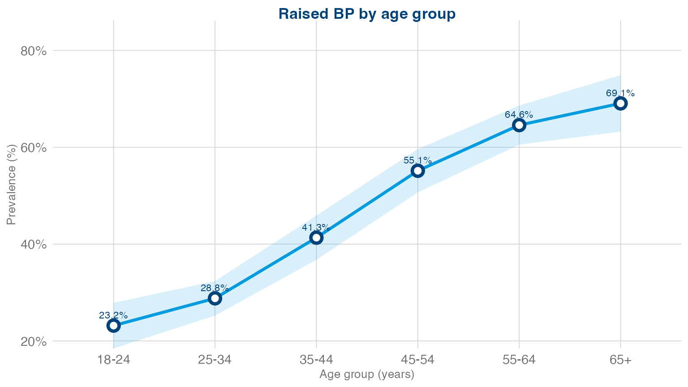
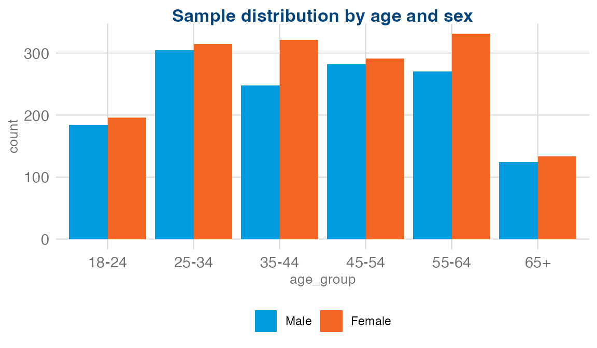
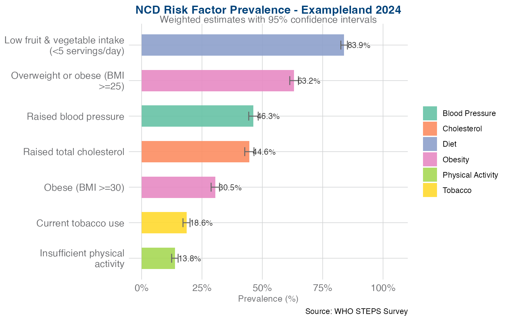

Analysing WHO STEPS Survey Data with stepssurvey
Abhijit Pakhare
2026-05-06
Source:vignettes/stepssurvey-guide.Rmd
stepssurvey-guide.RmdIntroduction
The WHO STEPwise Approach to NCD Risk Factor Surveillance (STEPS) is the standard method for collecting population-level data on chronic disease risk factors. Surveys measure behavioural risk factors (tobacco, alcohol, diet, physical activity), physical measurements (anthropometry, blood pressure), and biochemical markers (blood glucose, cholesterol).
The stepssurvey package provides a complete, end-to-end analysis pipeline that takes raw STEPS data from any country and produces publication-ready tables, visualisations, and Word reports – all while properly accounting for the complex survey design (stratification, clustering, sampling weights).
What this guide covers
- Installing the package
- Understanding the data pipeline
- Importing and detecting STEPS variables (v3.1 and v3.2)
- Column mapping for non-standard datasets
- Cleaning and deriving WHO-standard indicators
- Configurable indicator thresholds
- Data quality diagnostics
- Setting up the complex survey design
- Computing weighted prevalence estimates
- Building tables and visualisations (including forest plot and radar chart)
- Generating reports (fact sheet, data book, country report)
- Running the full pipeline in one call
- Using the interactive Shiny app
- Working with your own data
Installation
Install the development version from GitHub:
# install.packages("pak")
pak::pak("drpakhare/stepssurvey")Or with devtools:
# install.packages("devtools")
devtools::install_github("drpakhare/stepssurvey")Load the package:
The pipeline at a glance
The package follows a linear, modular pipeline. You can use the
one-command run_steps_pipeline() shortcut or call each step
yourself for full control.
Raw data (.csv / .xlsx / .dta / .sav)
|
v
import_steps_data() -- read any format
|
v
detect_steps_columns() -- auto-detect v3.1/v3.2 codes
-- OR --
read_column_mapping() -- use Excel mapping template
|
v
clean_steps_data() -- derive WHO indicators
| (configurable thresholds)
v
steps_data_quality() -- digit preference, completeness,
| plausibility, weight diagnostics
v
setup_survey_design() -- step-specific weights
|
v
compute_all_indicators() -- weighted prevalences & means
|
+---> build_steps_tables() -> summary flextables
+---> build_steps_plots() -> ggplot2 charts + forest + radar
+---> render_fact_sheet() -> Fact Sheet (HTML or Word)
+---> render_country_report() -> Summary Report (Word)
|
v
compute_all_tables() -- 60+ WHO registry tables
|
v
build_all_tables() -> 3-panel flextables (Men|Women|Both)
|
+---> render_data_book() -> Detailed Data Book (Word)Each function returns its output, so you can inspect, modify, or export results at every stage.
Step 1: Generate or import data
Using the built-in test data generator
For learning and testing, the package includes a realistic data simulator:
raw <- generate_test_data(n = 3000, seed = 42)
#> ✓ Generated test data: 3000 rows × 28 columns
dim(raw)
#> [1] 3000 28
names(raw)
#> [1] "stratum" "psu" "wt_final" "sex" "age" "t1"
#> [7] "t2" "a1" "a5" "met_total" "d1" "d2"
#> [13] "d3" "d4" "m1" "m2" "m3" "b1"
#> [19] "b2" "b3" "b4" "b5" "b6" "b7"
#> [25] "c1_mmol" "c5" "c6" "c10"The generated dataset mimics a real STEPS survey with 5 strata, 40 primary sampling units (PSUs), sampling weights, and realistic correlations between risk factors (e.g. blood pressure increasing with age, higher tobacco use in males).
Importing real STEPS data
In practice you will have a data file exported from Epi Info, SPSS,
or Stata. The import_steps_data() function reads all common
formats and standardises column names to lowercase with underscores:
# CSV
raw <- import_steps_data("data/raw/steps_survey_2024.csv")
# Excel
raw <- import_steps_data("data/raw/steps_survey_2024.xlsx")
# Stata (.dta) -- common for STEPS exports
raw <- import_steps_data("data/raw/steps_survey_2024.dta")
# SPSS (.sav)
raw <- import_steps_data("data/raw/steps_survey_2024.sav")The function uses the file extension to pick the right reader
(readr::read_csv, readxl::read_excel,
haven::read_dta, or haven::read_spss), then
passes column names through janitor::clean_names() so that
regardless of original casing you get a consistent format like
wt_final, age, sex.
Step 2: Auto-detect STEPS variables
WHO STEPS datasets use standardised variable codes, but the codes
changed between instrument versions and many countries add their own
prefixes. The detect_steps_columns() function searches for
each variable using a prioritised alias list:
cols <- detect_steps_columns(raw)
#> Detecting STEPS columns...
#> ✓ Age: 'age'
#> ✓ Sex: 'sex'
#> ⚠ Could not auto-detect column for: Age range group
#> ⚠ Could not auto-detect column for: Valid/consent flag
#> ⚠ Could not auto-detect column for: Urban/rural
#> ✓ Weight Step 1 (behavioural): 'wt_final'
#> ⚠ Could not auto-detect column for: Weight Step 2 (physical)
#> ⚠ Could not auto-detect column for: Weight Step 3 (biochemical)
#> ✓ Stratum: 'stratum'
#> ✓ PSU: 'psu'
#> ✓ Current tobacco use: 't1'
#> ✓ Daily tobacco use: 't2'
#> ⚠ Could not auto-detect column for: Age started smoking
#> ⚠ Could not auto-detect column for: Smoking duration
#> ⚠ Could not auto-detect column for: Manufactured cigarettes/day
#> ⚠ Could not auto-detect column for: Manufactured cigarettes/week
#> ⚠ Could not auto-detect column for: Hand-rolled cigarettes/day
#> ⚠ Could not auto-detect column for: Pipes/day
#> ⚠ Could not auto-detect column for: Cigars/day
#> ⚠ Could not auto-detect column for: Shisha/day
#> ⚠ Could not auto-detect column for: Quit attempt past 12m
#> ⚠ Could not auto-detect column for: Advised to quit by HCP
#> ⚠ Could not auto-detect column for: Past smoking
#> ⚠ Could not auto-detect column for: Past daily smoking
#> ⚠ Could not auto-detect column for: Quitting age
#> ⚠ Could not auto-detect column for: Duration since quitting
#> ⚠ Could not auto-detect column for: Current smokeless tobacco
#> ⚠ Could not auto-detect column for: Daily smokeless tobacco
#> ⚠ Could not auto-detect column for: Snuff mouth/day
#> ⚠ Could not auto-detect column for: Chewing tobacco/day
#> ⚠ Could not auto-detect column for: Betel quid/day
#> ⚠ Could not auto-detect column for: Past smokeless tobacco
#> ⚠ Could not auto-detect column for: Past daily smokeless
#> ⚠ Could not auto-detect column for: Second-hand smoke at home
#> ⚠ Could not auto-detect column for: Second-hand smoke at workplace
#> ⚠ Could not auto-detect column for: Any tobacco product
#> → Skipped 'a1' for Ever consumed alcohol (label '' does not match)
#> ⚠ Could not auto-detect column for: Ever consumed alcohol
#> ⚠ Could not auto-detect column for: Alcohol past 12 months
#> → Skipped 'a5' for Current alcohol use (past 30 days) (label '' does not match)
#> → Skipped 'a1' for Current alcohol use (past 30 days) (label '' does not match)
#> ⚠ Could not auto-detect column for: Current alcohol use (past 30 days)
#> ⚠ Could not auto-detect column for: Heavy episodic drinking
#> ⚠ Could not auto-detect column for: Stopped drinking
#> ⚠ Could not auto-detect column for: Alcohol frequency (past 12m)
#> ⚠ Could not auto-detect column for: Drinking occasions (past 30d)
#> ⚠ Could not auto-detect column for: Drinks per occasion
#> ⚠ Could not auto-detect column for: Largest drinks on one occasion
#> ⚠ Could not auto-detect column for: Times with 6+ drinks
#> ⚠ Could not auto-detect column for: Alcohol 7-day frequency
#> ⚠ Could not auto-detect column for: Homebrew consumption
#> ⚠ Could not auto-detect column for: Drinking level category
#> ✓ Total MET minutes: 'met_total'
#> ⚠ Could not auto-detect column for: Vigorous work activity
#> ⚠ Could not auto-detect column for: Moderate work activity
#> ⚠ Could not auto-detect column for: Walk/bicycle transport
#> ⚠ Could not auto-detect column for: Vigorous recreational activity
#> ⚠ Could not auto-detect column for: Moderate recreational activity
#> ⚠ Could not auto-detect column for: Sedentary behaviour
#> ✓ Fruit days/week: 'd1'
#> ✓ Fruit servings/day: 'd2'
#> ✓ Vegetable days/week: 'd3'
#> ✓ Vegetable servings/day: 'd4'
#> ⚠ Could not auto-detect column for: Salt added at table
#> ⚠ Could not auto-detect column for: Salt added in cooking
#> ⚠ Could not auto-detect column for: Processed food high in salt
#> ⚠ Could not auto-detect column for: Perceived salt intake
#> ⚠ Could not auto-detect column for: Importance of lowering salt
#> ⚠ Could not auto-detect column for: Knowledge of salt effects
#> ⚠ Could not auto-detect column for: Limit processed food for salt
#> ⚠ Could not auto-detect column for: Check salt labels
#> ⚠ Could not auto-detect column for: Buy low-salt alternatives
#> ⚠ Could not auto-detect column for: Use spices instead of salt
#> ⚠ Could not auto-detect column for: Avoid food outside home
#> ⚠ Could not auto-detect column for: Other salt control action
#> ⚠ Could not auto-detect column for: Type of cooking oil/fat
#> ⚠ Could not auto-detect column for: Meals outside home per week
#> ⚠ Could not auto-detect column for: Vigorous work days/week
#> ⚠ Could not auto-detect column for: Vigorous work hours
#> ⚠ Could not auto-detect column for: Vigorous work minutes
#> ⚠ Could not auto-detect column for: Moderate work days/week
#> ⚠ Could not auto-detect column for: Moderate work hours
#> ⚠ Could not auto-detect column for: Moderate work minutes
#> ⚠ Could not auto-detect column for: Transport days/week
#> ⚠ Could not auto-detect column for: Transport hours
#> ⚠ Could not auto-detect column for: Transport minutes
#> ⚠ Could not auto-detect column for: Vigorous recreation days/week
#> ⚠ Could not auto-detect column for: Vigorous recreation hours
#> ⚠ Could not auto-detect column for: Vigorous recreation minutes
#> ⚠ Could not auto-detect column for: Moderate recreation days/week
#> ⚠ Could not auto-detect column for: Moderate recreation hours
#> ⚠ Could not auto-detect column for: Moderate recreation minutes
#> ⚠ Could not auto-detect column for: Sedentary hours
#> ⚠ Could not auto-detect column for: Sedentary minutes
#> ⚠ Could not auto-detect column for: BP ever measured
#> ⚠ Could not auto-detect column for: Ever diagnosed raised BP
#> ⚠ Could not auto-detect column for: BP diagnosed past 12m
#> ⚠ Could not auto-detect column for: Traditional healer for BP
#> ⚠ Could not auto-detect column for: Herbal remedy for BP
#> ⚠ Could not auto-detect column for: Blood sugar ever measured
#> ⚠ Could not auto-detect column for: Ever diagnosed diabetes
#> ⚠ Could not auto-detect column for: DM diagnosed past 12m
#> ⚠ Could not auto-detect column for: Currently on insulin
#> ⚠ Could not auto-detect column for: Traditional healer for DM
#> ⚠ Could not auto-detect column for: Herbal remedy for DM
#> ⚠ Could not auto-detect column for: Cholesterol ever measured
#> ⚠ Could not auto-detect column for: Ever diagnosed raised cholesterol
#> ⚠ Could not auto-detect column for: Chol diagnosed past 12m
#> ⚠ Could not auto-detect column for: Traditional healer for chol
#> ⚠ Could not auto-detect column for: Herbal remedy for chol
#> ⚠ Could not auto-detect column for: CVD history (heart attack/stroke)
#> ⚠ Could not auto-detect column for: Currently taking aspirin
#> ⚠ Could not auto-detect column for: Currently taking statins
#> ⚠ Could not auto-detect column for: Advised: quit tobacco
#> ⚠ Could not auto-detect column for: Advised: reduce salt
#> ⚠ Could not auto-detect column for: Advised: eat fruit/veg
#> ⚠ Could not auto-detect column for: Advised: reduce fat
#> ⚠ Could not auto-detect column for: Advised: more PA
#> ⚠ Could not auto-detect column for: Advised: healthy weight
#> ⚠ Could not auto-detect column for: Cervical cancer screening
#> ⚠ Could not auto-detect column for: Education years
#> ✓ Highest education level: 'c5'
#> ✓ Ethnicity/Caste: 'c6'
#> ⚠ Could not auto-detect column for: Marital status
#> ⚠ Could not auto-detect column for: Employment status
#> ⚠ Could not auto-detect column for: Household income
#> ✓ Height (cm): 'm1'
#> ✓ Weight (kg): 'm2'
#> ✓ Waist circumference (cm): 'm3'
#> ⚠ Could not auto-detect column for: Hip circumference (cm)
#> ✓ SBP reading 1: 'b1'
#> ✓ SBP reading 2: 'b3'
#> ✓ SBP reading 3: 'b5'
#> ✓ DBP reading 1: 'b2'
#> ✓ DBP reading 2: 'b4'
#> ✓ DBP reading 3: 'b6'
#> ✓ BP medications: 'b7'
#> ⚠ Could not auto-detect column for: Pregnancy status
#> ⚠ Could not auto-detect column for: Heart rate reading 1
#> ⚠ Could not auto-detect column for: Heart rate reading 2
#> ⚠ Could not auto-detect column for: Heart rate reading 3
#> ⚠ Could not auto-detect column for: Mean heart rate
#> ✓ Fasting blood glucose: 'b5'
#> ⚠ Could not auto-detect column for: Random blood glucose
#> ✓ Fasting status: 'b1'
#> ✓ Diabetes medications: 'b6'
#> ✓ Total cholesterol: 'c6'
#> ⚠ Could not auto-detect column for: HDL cholesterol
#> ⚠ Could not auto-detect column for: Triglycerides
#> ✓ Cholesterol medications: 'c10'
#> → 29/147 columns detected automaticallyIt returns a named list mapping each conceptual variable to the actual column found in your data. You can inspect the mapping:
# Which column was matched for fasting glucose?
cols$fasting_glucose
#> [1] "b5"
# Which column for SBP reading 1?
cols$sbp1
#> [1] "b1"
# How many columns were detected?
sum(!sapply(cols, is.null))
#> [1] 29Version 3.1 vs 3.2 variable codes
A key feature of the package is transparent support for both WHO STEPS instrument versions. The variable codes changed substantially between versions:
| Measurement | v3.1 / Epi Info | v3.2 Instrument |
|---|---|---|
| SBP readings | B1, B3, B5 | M4a, M5a, M6a |
| DBP readings | B2, B4, B6 | M4b, M5b, M6b |
| BP medications | B7 | M7 / H3 |
| Height | M1 | M11 |
| Weight | M2 | M12 |
| Waist | M3 | M14 |
| Fasting glucose | C1 (c1_mmol) | B5 |
| Diabetes meds | C5 | B6 / H8 |
| Total cholesterol | C6 | B8 |
| Cholesterol meds | C10 | B9 / H14 |
| Sex | – | C1 |
| Age | C1 | C3 |
The detection function includes aliases for both versions, so a
dataset using b1 for SBP (v3.1) and one using
m4a (v3.2) will both be detected correctly. The search is
case-insensitive.
If a column is not found automatically, you can override the mapping before cleaning:
cols$fasting_glucose <- "my_custom_glucose_variable"Column mapping for non-standard datasets
Many real-world STEPS datasets use country-specific variable names that auto-detection cannot resolve. The package includes an Excel mapping template that lets you specify the correspondence between your column names and the standard STEPS variables.
Step 1: Get the blank template:
# Copy the template to your working directory
file.copy(
system.file("templates", "column_mapping_template.xlsx", package = "stepssurvey"),
file.path(tempdir(), "my_mapping.xlsx")
)The template has two sheets: Instructions with usage guidance, and Column Mapping with 110 standard variables organised by domain (Demographics, Tobacco, Alcohol, Diet, Physical Activity, Anthropometry, Blood Pressure, Biochemical, History & Treatment). Required variables are highlighted in red; optional ones in yellow.
Step 2: Open the template in Excel, and for each variable in column A, type your dataset’s column name in column C (“Your Column Name”). Leave blank any variables your dataset does not have.
Step 3: Read the filled template:
cols <- read_column_mapping("my_mapping.xlsx", data = raw)The data argument is optional but recommended – it
validates that every mapped column actually exists in your dataset and
warns about typos. The returned cols list is identical in
structure to what detect_steps_columns() produces, so you
can pass it directly to clean_steps_data().
The run_steps_pipeline() function also accepts a
mapping_file parameter:
result <- run_steps_pipeline(
"my_data.dta",
country_name = "My Country",
survey_year = 2024,
mapping_file = "my_mapping.xlsx"
)Step 3: Clean and derive indicators
The clean_steps_data() function performs all
WHO-recommended data processing in a single call:
clean <- clean_steps_data(raw, cols, age_min = 18, age_max = 69)
#> ⚠ No Step 2 weight found - copying Step 1 weight
#> ⚠ No Step 3 weight found - copying Step 1 weight
#> ✓ GPAQ special codes (77/88/99) cleaned, values capped at valid ranges
#> ✓ GPAQ screening questions used to set non-active domains to 0
#> ✓ Diet special codes (77/88) cleaned; zero-days → 0 servings
#> ✓ Cleaning complete. Final dataset: 3000 rows x 64 columns
dim(clean)
#> [1] 3000 64What the cleaning step does
Demographics:
- Restricts age to the specified range (default 18–69)
- Creates WHO standard age groups: 18–24, 25–34, 35–44, 45–54, 55–64, 65+
- Harmonises sex coding (1/2, “Male”/“Female”, “M”/“F” all accepted)
- Ensures survey weight, stratum, and PSU columns are present
Behavioural risk factors (Step 1):
- Recodes tobacco and alcohol variables to logical TRUE/FALSE using
recode_yn(), which understands 0/1, 1/2, “yes”/“no” patterns - Computes average daily fruit and vegetable servings and flags
low_fruit_veg(combined < 5 servings/day) - Classifies physical activity into Low / Moderate / High based on MET-minutes/week thresholds (< 600, 600–2999, >= 3000)
Physical measurements (Step 2):
- Applies plausibility checks (e.g. height 100–250 cm, weight 20–300
kg, waist 40–200 cm) and sets implausible values to
NA - Computes BMI and classifies into Underweight / Normal / Overweight / Obese
- Flags central obesity using WHO waist circumference thresholds (>= 102 cm male, >= 88 cm female)
- Computes waist-to-hip ratio if both measurements are available
- Averages the last two of three BP readings (WHO protocol) to obtain mean SBP and mean DBP
- Creates the
raised_bpindicator (SBP >= 140 or DBP >= 90 or on medication) and WHO blood pressure staging
Biochemical measurements (Step 3):
- Flags raised fasting glucose (>= 7.0 mmol/L or on diabetes medication)
- Flags impaired fasting glucose (6.1–6.9 mmol/L)
- Flags raised total cholesterol (>= 5.0 mmol/L)
- Flags low HDL cholesterol (sex-specific thresholds)
- Flags raised triglycerides (>= 1.7 mmol/L)
Configurable indicator thresholds
All indicator thresholds can be customised. This is essential when a country uses non-standard definitions (e.g. Mongolia uses 130/80 mmHg for raised blood pressure instead of the WHO default 140/90):
clean <- clean_steps_data(raw, cols,
bp_sbp_threshold = 130, # SBP threshold (default 140)
bp_dbp_threshold = 80, # DBP threshold (default 90)
bmi_overweight = 25.0, # BMI overweight (default 25)
bmi_obese = 30.0, # BMI obese (default 30)
glucose_threshold = 7.0, # Raised glucose mmol/L (default 7.0)
glucose_impaired_threshold = 6.1, # Impaired glucose mmol/L (default 6.1)
chol_threshold = 5.0 # Raised cholesterol mmol/L (default 5.0)
)The same thresholds are available in steps_config() and
propagate through run_steps_pipeline() and the Shiny app
interface.
You can inspect the derived variables:
# BMI categories
table(clean$bmi_category, clean$sex)
#>
#> Male Female
#> Normal 444 429
#> Obese 420 509
#> Overweight 472 500
#> Underweight 77 148
# Blood pressure staging
table(clean$bp_stage)
#>
#> Elevated Normal Stage 1 Stage 2 Stage 3
#> 866 973 864 257 40
# Physical activity levels
table(clean$pa_category, clean$sex)
#>
#> Male Female
#> High 236 265
#> Low 200 213
#> Moderate 977 1109Step 3b: Data quality diagnostics
Before proceeding with analysis, the package provides a comprehensive
data quality assessment. The steps_data_quality() function
checks four dimensions:
quality <- steps_data_quality(clean)
names(quality)
# [1] "digit_preference" "completeness" "plausibility" "weights"Digit preference detects heaping on terminal digits 0 and 5 in blood pressure and anthropometric measurements – a common data collection artefact:
plot_digit_preference(quality, measure = "sbp")Completeness reports the percentage of non-missing values for every key variable, helping identify modules that may have been skipped.
plot_completeness(quality)Plausibility flags values outside physiologically reasonable ranges (e.g. systolic BP > 300 mmHg, height < 100 cm).
Sampling weights shows the distribution and coefficient of variation of each step-specific weight, helping detect extreme weights that might destabilise survey estimates:
plot_weights(quality)In the Shiny app, the Quality tab presents all four diagnostics interactively with summary value boxes.
Step 4: Set up the survey design
STEPS surveys use complex sampling designs. Ignoring the design leads
to biased estimates and incorrect confidence intervals. The
setup_survey_design() function creates a
survey::svydesign object that accounts for weights,
stratification, and clustering:
designs <- setup_survey_design(clean)
#> Setting up survey designs (per WHO STEPS Step)...
#> Design: Stratified cluster sampling with weights
#> → Unweighted n = 3,000
#> → Weighted N (Step 1) = 4,532
#> Survey design createdThe returned object is a list with three elements
(step1, step2, step3), each a
survey::svydesign object weighted appropriately for that
step of the survey. Functions like compute_all_indicators()
accept this list directly, but for custom estimates you pick the design
matching the step of the variable you are analysing:
The function auto-detects the design complexity based on which columns are present:
- Full complex design: weights + strata + clusters
- Weights + clusters: no stratification variable
- Weights + strata: no clustering (rare)
- Weights only: self-representing design
- Unweighted: simple random sample (weights set to 1)
Sampling weights are used as-is without trimming, consistent with the WHO official STEPS analysis scripts.
The returned object can be used with any function from the survey package if you need custom analyses beyond what the package provides.
Step 5: Compute indicators
All indicators at once
result <- compute_all_indicators(designs)
#> Computing tobacco indicators...
#> Computing tobacco indicators...
#> Computing alcohol indicators...
#> Computing alcohol indicators...
#> Computing diet & physical activity indicators...
#> Computing diet & physical activity indicators...
#> Computing anthropometry indicators...
#> Computing anthropometry indicators...
#> Computing blood pressure indicators...
#> Computing blood pressure indicators...
#> Computing biochemical indicators...
#> Computing biochemical indicators...
#> ✓ Computed 7 key indicators across all domains.This returns a list with two elements:
-
result$results– a nested list of domain-specific estimates (total, by sex, by age group) -
result$key_indicators– a tidy data frame of headline prevalences
result$key_indicators
#> domain
#> as.numeric(current_tobacco) Tobacco
#> as.numeric(insufficient_pa) Physical Activity
#> as.numeric(low_fruit_veg) Diet
#> as.numeric(overweight_obese) Obesity
#> as.numeric(obese) Obesity
#> as.numeric(raised_bp) Blood Pressure
#> as.numeric(raised_chol) Cholesterol
#> indicator
#> as.numeric(current_tobacco) Current tobacco use
#> as.numeric(insufficient_pa) Insufficient physical activity
#> as.numeric(low_fruit_veg) Low fruit & vegetable intake (<5 servings/day)
#> as.numeric(overweight_obese) Overweight or obese (BMI >=25)
#> as.numeric(obese) Obese (BMI >=30)
#> as.numeric(raised_bp) Raised blood pressure
#> as.numeric(raised_chol) Raised total cholesterol
#> estimate lower upper
#> as.numeric(current_tobacco) 18.60259 17.14831 20.05687
#> as.numeric(insufficient_pa) 13.78651 12.44625 15.12676
#> as.numeric(low_fruit_veg) 83.88126 82.52029 85.24222
#> as.numeric(overweight_obese) 63.16270 61.36650 64.95890
#> as.numeric(obese) 30.54006 28.78750 32.29263
#> as.numeric(raised_bp) 46.34158 44.37379 48.30937
#> as.numeric(raised_chol) 44.63090 42.72013 46.54168Domain-specific functions
For more control, call each domain function separately:
tob <- compute_tobacco_indicators(designs$step1)
alc <- compute_alcohol_indicators(designs$step1)
diet <- compute_diet_pa_indicators(designs$step1)
anth <- compute_anthropometry_indicators(designs$step2)
bp <- compute_bp_indicators(designs$step2)
bio <- compute_biochemical_indicators(designs$step3)Each returns a named list. For example, the tobacco module returns:
tob <- compute_tobacco_indicators(designs$step1)
#> Computing tobacco indicators...
names(tob)
#> [1] "current_tobacco_total" "current_tobacco_by_sex" "current_tobacco_by_age"
#> [4] "current_smoker_total" "current_smoker_by_sex" "current_smoker_by_age"
#> [7] "daily_tobacco_total" "daily_tobacco_by_sex" "daily_tobacco_by_age"
# Overall prevalence of current tobacco use
tob$current_tobacco_total
#> estimate lower upper se
#> as.numeric(current_tobacco) 18.60259 17.14831 20.05687 0.7419928
# Prevalence by sex
tob$current_tobacco_by_sex
#> sex estimate lower upper
#> Male Male 30.321330 27.812102 32.830558
#> Female Female 8.402637 6.895871 9.909403Custom weighted estimates
The package exports two low-level helpers for any weighted estimate you need:
# Weighted proportion with 95% CI (raised_bp is a Step 2 variable)
svyprop(~raised_bp, designs$step2)
#> estimate lower upper se
#> raised_bpFALSE 53.65842 51.69063 55.62621 1.003994
#> raised_bpTRUE 46.34158 44.37379 48.30937 1.003994
# Stratified by sex
svyprop(~raised_bp, designs$step2, by = ~sex)
#> sex estimate1 estimate2 lower estimate3 upper estimate4
#> Male Male 55.87879 44.12121 53.11178 41.35420 58.64580 46.88822
#> Female Female 51.72582 48.27418 48.91385 45.46221 54.53779 51.08615
# Weighted mean with 95% CI
svymn(~mean_sbp, designs$step2, by = ~sex)
#> sex estimate lower upper
#> Male Male 127.4325 126.3410 128.5240
#> Female Female 128.6173 127.5105 129.7242Step 6: Build publication-ready tables
The package provides two table systems for different purposes.
Summary tables (Both Sexes only)
tables <- build_steps_tables(result$results)
#> ✓ Generated 6 tables.
names(tables)
#> [1] "current_tobacco" "insufficient_pa" "low_fruit_veg" "overweight_obese"
#> [5] "raised_bp" "raised_chol"Each table is a flextable object styled with WHO STEPS branding (dark blue headers, formatted confidence intervals). These tables show estimates by age group for Both Sexes combined – ideal for summary reports and quick reference.
# Display the raised blood pressure table
tables$raised_bp
# Export to Word
flextable::save_as_docx(tables$raised_bp, path = file.path(tempdir(), "bp_table.docx"))Detailed WHO 3-panel tables (Men | Women | Both Sexes)
For the full WHO STEPS data book format, use the detailed table engine. This produces ~60 tables in the standard 3-panel layout (Age Group | Men | Women | Both Sexes):
# Step 1: Compute raw results from the table registry
computed <- compute_all_tables(designs)
# Step 2: Format into flextable objects with WHO styling
detailed <- build_all_tables(computed)
names(detailed) # e.g. "T_current_smokers", "M_bp_mean", "B_glucose_raised"The table IDs use prefixes matching WHO STEPS domains:
| Prefix | Domain |
|---|---|
| T_ | Tobacco |
| A_ | Alcohol |
| D_ | Diet |
| P_ | Physical Activity |
| H_ | Health History & Treatment |
| M_ | Physical Measurements |
| B_ | Biochemical Measurements |
| R_ | Cardiovascular Risk |
| RF_ | Combined Risk Factors |
You can access individual tables by ID or filter by section:
# Browse the full table registry
registry <- steps_table_registry()
# Get all tables for a specific section
bp_entries <- get_registry_by_section("Blood Pressure")
# Get all Step 2 tables
step2_entries <- get_registry_by_step(2)
# List available sections
list_registry_sections()Step 7: Create visualisations
plots <- build_steps_plots(
indicators = result$results,
key_indicators = result$key_indicators,
country_name = "Exampleland",
survey_year = 2024
)
names(plots)
#> [1] "overview" "tobacco_by_sex" "bp_by_sex" "obesity_by_sex"
#> [5] "bp_by_age" "obesity_by_age" "forest" "radar"
#> [9] "sex_dashboard"Overview chart
The overview plot shows all key indicators as a horizontal bar chart with 95% confidence intervals, sorted by prevalence:
plots$overview
#> `height` was translated to `width`.
Sex-stratified dashboard
If multiple sex-stratified indicators are available, the package creates a 2 x 2 dashboard using patchwork:
plots$sex_dashboardAge-stratified trends
Age trend plots show how each risk factor varies across the WHO standard age groups, with shaded confidence bands:
plots$bp_by_age
Forest plot
The forest plot shows all key indicators as horizontal point-and-CI estimates, colour-coded by STEPS domain:
plots$forest
# Or build standalone:
build_forest_plot(result$key_indicators, "Exampleland", 2024)Risk profile radar chart
The radar (spider) chart provides a visual fingerprint of the country’s NCD risk factor profile, making it easy to spot which domains are most affected:
plots$radar
# Or build standalone:
build_radar_plot(result$key_indicators, "Exampleland", 2024)Saving plots
save_steps_plots(plots, output_dir = file.path(tempdir(), "figures"))
# Creates:
# outputs/figures/01_overview_indicators.png
# outputs/figures/02_by_sex_dashboard.png
# outputs/figures/03_bp_by_age.png
# outputs/figures/04_obesity_by_age.png
# outputs/figures/05_forest_plot.png
# outputs/figures/06_radar_plot.pngWHO STEPS colour palette and theme
The package uses a consistent visual identity. You can apply the same styling to your own ggplot2 plots:
pal <- steps_colors()
str(pal)
#> List of 9
#> $ blue : chr "#009ADE"
#> $ dark_blue : chr "#00427A"
#> $ green : chr "#7AC143"
#> $ orange : chr "#F26522"
#> $ red : chr "#ED1C24"
#> $ grey : chr "#6D6E71"
#> $ light_grey: chr "#D1D3D4"
#> $ male : chr "#009ADE"
#> $ female : chr "#F26522"
library(ggplot2)
#> Warning: package 'ggplot2' was built under R version 4.5.2
ggplot(clean, aes(x = age_group, fill = sex)) +
geom_bar(position = "dodge") +
scale_fill_manual(values = c(Male = pal$male, Female = pal$female)) +
theme_steps() +
labs(title = "Sample distribution by age and sex")
Step 8: Generate Word reports
The package produces three complementary reports:
| Report | Function | Format | Content |
|---|---|---|---|
| Fact Sheet | render_fact_sheet() |
HTML or Word | One-page overview with radar chart, summary table, and key findings |
| Summary Report | render_country_report() |
Word | Narrative with key findings, charts, and recommendations |
| Detailed Data Book | render_data_book() |
Word | Complete WHO 3-panel tables (Men | Women | Both Sexes) across all domains |
cfg <- steps_config(
data_path = "data/raw/steps_survey_2024.csv",
country_name = "Exampleland",
survey_year = 2024,
age_min = 18,
age_max = 69
)
# Fact sheet -- one-page overview (HTML for sharing, Word for print)
render_fact_sheet(cfg, output_dir = "outputs", format = "html")
render_fact_sheet(cfg, output_dir = "outputs", format = "word")
# Summary report -- narrative with key findings, charts, recommendations
render_country_report(cfg, output_dir = "outputs")
# Data book -- detailed WHO 3-panel tables by domain
render_data_book(cfg, output_dir = "outputs")Each function runs the entire pipeline internally (import, clean, analyse) and renders an R Markdown template to a Word document. The output files are saved in the specified directory.
What each report contains
The Fact Sheet is a single-page overview with a branded header, summary table of key indicators (noting any non-default thresholds), the radar chart, sex-stratified dashboard, and forest plot. The HTML version is self-contained and ideal for web sharing; the Word version is print-ready.
The Summary Report includes an executive summary table, narrative sections for each risk factor domain with inline prevalence figures, embedded charts (overview indicators, by-sex breakdowns, age trends), and WHO-aligned policy recommendations.
The Data Book contains the full set of ~60 WHO STEPS tables in the standard 3-panel format. Each table shows estimates by age group separately for Men, Women, and Both Sexes. Tables are organised by STEPS step: Step 1 (Behavioural), Step 1.5 (Health History), Step 2 (Physical Measurements), Step 3 (Biochemical), and Combined Risk Factors.
One-command pipeline
For the fastest path from raw data to results,
run_steps_pipeline() chains every step and returns all
intermediate objects:
out <- run_steps_pipeline(
data_path = "data/raw/steps_survey_2024.csv",
country_name = "Exampleland",
survey_year = 2024,
age_min = 18,
age_max = 69,
output_dir = "outputs",
render_reports = TRUE
)
# Access any intermediate result
out$raw_data
out$clean_data
out$design
out$indicators
out$key_indicators
out$tables
out$plotsSetting render_reports = FALSE skips the Word documents
(useful for interactive exploration or when rmarkdown /
Pandoc are not available).
If your dataset uses non-standard column names, pass a filled mapping template:
out <- run_steps_pipeline(
"my_data.dta",
country_name = "My Country",
survey_year = 2024,
mapping_file = "my_mapping.xlsx"
)Working with real STEPS data
Preparing your data file
The package accepts data in four formats:
| Format | Extension | Typical source |
|---|---|---|
| CSV | .csv | Spreadsheet export |
| Excel | .xlsx | Direct data entry |
| Stata | .dta | WHO Epi Info / analysis template |
| SPSS | .sav | SPSS data export |
Before importing, ensure the file contains at minimum:
- Age and sex columns (required for all analyses)
- Sampling weight column (recommended; if absent, all weights are set to 1)
- At least some risk factor measurements from Step 1, 2, or 3
Handling custom variable names
For datasets with a few non-standard names, override individual mappings after auto-detection:
raw <- import_steps_data("my_steps_data.csv")
cols <- detect_steps_columns(raw)
cols$fasting_glucose <- "blood_sugar_fasting"
cols$sbp1 <- "systolic_bp_1"
clean <- clean_steps_data(raw, cols)For datasets where many or most variables have non-standard names, use the column mapping template instead (see the “Column mapping for non-standard datasets” section above). This is the recommended approach for real-world STEPS microdata.
Adjusting age range
Some STEPS surveys target populations outside the standard 18–69
range. Adjust with the age_min and age_max
parameters:
# Include up to age 79
clean <- clean_steps_data(raw, cols, age_min = 18, age_max = 79)Note that changing the upper age limit adds a wider final age group (e.g. 65–79 instead of 65+).
Complete worked example
This section walks through a full analysis using simulated data, showing every step from generation to output.
library(stepssurvey)
# 1. Generate a realistic test dataset
raw <- generate_test_data(n = 3000, seed = 42)
#> ✓ Generated test data: 3000 rows × 28 columns
# 2. Detect standard STEPS variable columns
cols <- detect_steps_columns(raw)
#> Detecting STEPS columns...
#> ✓ Age: 'age'
#> ✓ Sex: 'sex'
#> ⚠ Could not auto-detect column for: Age range group
#> ⚠ Could not auto-detect column for: Valid/consent flag
#> ⚠ Could not auto-detect column for: Urban/rural
#> ✓ Weight Step 1 (behavioural): 'wt_final'
#> ⚠ Could not auto-detect column for: Weight Step 2 (physical)
#> ⚠ Could not auto-detect column for: Weight Step 3 (biochemical)
#> ✓ Stratum: 'stratum'
#> ✓ PSU: 'psu'
#> ✓ Current tobacco use: 't1'
#> ✓ Daily tobacco use: 't2'
#> ⚠ Could not auto-detect column for: Age started smoking
#> ⚠ Could not auto-detect column for: Smoking duration
#> ⚠ Could not auto-detect column for: Manufactured cigarettes/day
#> ⚠ Could not auto-detect column for: Manufactured cigarettes/week
#> ⚠ Could not auto-detect column for: Hand-rolled cigarettes/day
#> ⚠ Could not auto-detect column for: Pipes/day
#> ⚠ Could not auto-detect column for: Cigars/day
#> ⚠ Could not auto-detect column for: Shisha/day
#> ⚠ Could not auto-detect column for: Quit attempt past 12m
#> ⚠ Could not auto-detect column for: Advised to quit by HCP
#> ⚠ Could not auto-detect column for: Past smoking
#> ⚠ Could not auto-detect column for: Past daily smoking
#> ⚠ Could not auto-detect column for: Quitting age
#> ⚠ Could not auto-detect column for: Duration since quitting
#> ⚠ Could not auto-detect column for: Current smokeless tobacco
#> ⚠ Could not auto-detect column for: Daily smokeless tobacco
#> ⚠ Could not auto-detect column for: Snuff mouth/day
#> ⚠ Could not auto-detect column for: Chewing tobacco/day
#> ⚠ Could not auto-detect column for: Betel quid/day
#> ⚠ Could not auto-detect column for: Past smokeless tobacco
#> ⚠ Could not auto-detect column for: Past daily smokeless
#> ⚠ Could not auto-detect column for: Second-hand smoke at home
#> ⚠ Could not auto-detect column for: Second-hand smoke at workplace
#> ⚠ Could not auto-detect column for: Any tobacco product
#> → Skipped 'a1' for Ever consumed alcohol (label '' does not match)
#> ⚠ Could not auto-detect column for: Ever consumed alcohol
#> ⚠ Could not auto-detect column for: Alcohol past 12 months
#> → Skipped 'a5' for Current alcohol use (past 30 days) (label '' does not match)
#> → Skipped 'a1' for Current alcohol use (past 30 days) (label '' does not match)
#> ⚠ Could not auto-detect column for: Current alcohol use (past 30 days)
#> ⚠ Could not auto-detect column for: Heavy episodic drinking
#> ⚠ Could not auto-detect column for: Stopped drinking
#> ⚠ Could not auto-detect column for: Alcohol frequency (past 12m)
#> ⚠ Could not auto-detect column for: Drinking occasions (past 30d)
#> ⚠ Could not auto-detect column for: Drinks per occasion
#> ⚠ Could not auto-detect column for: Largest drinks on one occasion
#> ⚠ Could not auto-detect column for: Times with 6+ drinks
#> ⚠ Could not auto-detect column for: Alcohol 7-day frequency
#> ⚠ Could not auto-detect column for: Homebrew consumption
#> ⚠ Could not auto-detect column for: Drinking level category
#> ✓ Total MET minutes: 'met_total'
#> ⚠ Could not auto-detect column for: Vigorous work activity
#> ⚠ Could not auto-detect column for: Moderate work activity
#> ⚠ Could not auto-detect column for: Walk/bicycle transport
#> ⚠ Could not auto-detect column for: Vigorous recreational activity
#> ⚠ Could not auto-detect column for: Moderate recreational activity
#> ⚠ Could not auto-detect column for: Sedentary behaviour
#> ✓ Fruit days/week: 'd1'
#> ✓ Fruit servings/day: 'd2'
#> ✓ Vegetable days/week: 'd3'
#> ✓ Vegetable servings/day: 'd4'
#> ⚠ Could not auto-detect column for: Salt added at table
#> ⚠ Could not auto-detect column for: Salt added in cooking
#> ⚠ Could not auto-detect column for: Processed food high in salt
#> ⚠ Could not auto-detect column for: Perceived salt intake
#> ⚠ Could not auto-detect column for: Importance of lowering salt
#> ⚠ Could not auto-detect column for: Knowledge of salt effects
#> ⚠ Could not auto-detect column for: Limit processed food for salt
#> ⚠ Could not auto-detect column for: Check salt labels
#> ⚠ Could not auto-detect column for: Buy low-salt alternatives
#> ⚠ Could not auto-detect column for: Use spices instead of salt
#> ⚠ Could not auto-detect column for: Avoid food outside home
#> ⚠ Could not auto-detect column for: Other salt control action
#> ⚠ Could not auto-detect column for: Type of cooking oil/fat
#> ⚠ Could not auto-detect column for: Meals outside home per week
#> ⚠ Could not auto-detect column for: Vigorous work days/week
#> ⚠ Could not auto-detect column for: Vigorous work hours
#> ⚠ Could not auto-detect column for: Vigorous work minutes
#> ⚠ Could not auto-detect column for: Moderate work days/week
#> ⚠ Could not auto-detect column for: Moderate work hours
#> ⚠ Could not auto-detect column for: Moderate work minutes
#> ⚠ Could not auto-detect column for: Transport days/week
#> ⚠ Could not auto-detect column for: Transport hours
#> ⚠ Could not auto-detect column for: Transport minutes
#> ⚠ Could not auto-detect column for: Vigorous recreation days/week
#> ⚠ Could not auto-detect column for: Vigorous recreation hours
#> ⚠ Could not auto-detect column for: Vigorous recreation minutes
#> ⚠ Could not auto-detect column for: Moderate recreation days/week
#> ⚠ Could not auto-detect column for: Moderate recreation hours
#> ⚠ Could not auto-detect column for: Moderate recreation minutes
#> ⚠ Could not auto-detect column for: Sedentary hours
#> ⚠ Could not auto-detect column for: Sedentary minutes
#> ⚠ Could not auto-detect column for: BP ever measured
#> ⚠ Could not auto-detect column for: Ever diagnosed raised BP
#> ⚠ Could not auto-detect column for: BP diagnosed past 12m
#> ⚠ Could not auto-detect column for: Traditional healer for BP
#> ⚠ Could not auto-detect column for: Herbal remedy for BP
#> ⚠ Could not auto-detect column for: Blood sugar ever measured
#> ⚠ Could not auto-detect column for: Ever diagnosed diabetes
#> ⚠ Could not auto-detect column for: DM diagnosed past 12m
#> ⚠ Could not auto-detect column for: Currently on insulin
#> ⚠ Could not auto-detect column for: Traditional healer for DM
#> ⚠ Could not auto-detect column for: Herbal remedy for DM
#> ⚠ Could not auto-detect column for: Cholesterol ever measured
#> ⚠ Could not auto-detect column for: Ever diagnosed raised cholesterol
#> ⚠ Could not auto-detect column for: Chol diagnosed past 12m
#> ⚠ Could not auto-detect column for: Traditional healer for chol
#> ⚠ Could not auto-detect column for: Herbal remedy for chol
#> ⚠ Could not auto-detect column for: CVD history (heart attack/stroke)
#> ⚠ Could not auto-detect column for: Currently taking aspirin
#> ⚠ Could not auto-detect column for: Currently taking statins
#> ⚠ Could not auto-detect column for: Advised: quit tobacco
#> ⚠ Could not auto-detect column for: Advised: reduce salt
#> ⚠ Could not auto-detect column for: Advised: eat fruit/veg
#> ⚠ Could not auto-detect column for: Advised: reduce fat
#> ⚠ Could not auto-detect column for: Advised: more PA
#> ⚠ Could not auto-detect column for: Advised: healthy weight
#> ⚠ Could not auto-detect column for: Cervical cancer screening
#> ⚠ Could not auto-detect column for: Education years
#> ✓ Highest education level: 'c5'
#> ✓ Ethnicity/Caste: 'c6'
#> ⚠ Could not auto-detect column for: Marital status
#> ⚠ Could not auto-detect column for: Employment status
#> ⚠ Could not auto-detect column for: Household income
#> ✓ Height (cm): 'm1'
#> ✓ Weight (kg): 'm2'
#> ✓ Waist circumference (cm): 'm3'
#> ⚠ Could not auto-detect column for: Hip circumference (cm)
#> ✓ SBP reading 1: 'b1'
#> ✓ SBP reading 2: 'b3'
#> ✓ SBP reading 3: 'b5'
#> ✓ DBP reading 1: 'b2'
#> ✓ DBP reading 2: 'b4'
#> ✓ DBP reading 3: 'b6'
#> ✓ BP medications: 'b7'
#> ⚠ Could not auto-detect column for: Pregnancy status
#> ⚠ Could not auto-detect column for: Heart rate reading 1
#> ⚠ Could not auto-detect column for: Heart rate reading 2
#> ⚠ Could not auto-detect column for: Heart rate reading 3
#> ⚠ Could not auto-detect column for: Mean heart rate
#> ✓ Fasting blood glucose: 'b5'
#> ⚠ Could not auto-detect column for: Random blood glucose
#> ✓ Fasting status: 'b1'
#> ✓ Diabetes medications: 'b6'
#> ✓ Total cholesterol: 'c6'
#> ⚠ Could not auto-detect column for: HDL cholesterol
#> ⚠ Could not auto-detect column for: Triglycerides
#> ✓ Cholesterol medications: 'c10'
#> → 29/147 columns detected automatically
# 3. Clean data and derive all indicators
clean <- clean_steps_data(raw, cols, age_min = 18, age_max = 69)
#> ⚠ No Step 2 weight found - copying Step 1 weight
#> ⚠ No Step 3 weight found - copying Step 1 weight
#> ✓ GPAQ special codes (77/88/99) cleaned, values capped at valid ranges
#> ✓ GPAQ screening questions used to set non-active domains to 0
#> ✓ Diet special codes (77/88) cleaned; zero-days → 0 servings
#> ✓ Cleaning complete. Final dataset: 3000 rows x 64 columns
# 4. Create the complex survey design
designs <- setup_survey_design(clean)
#> Setting up survey designs (per WHO STEPS Step)...
#> Design: Stratified cluster sampling with weights
#> → Unweighted n = 3,000
#> → Weighted N (Step 1) = 4,532
#> Survey design created
# 5. Compute all NCD risk factor indicators
result <- compute_all_indicators(designs)
#> Computing tobacco indicators...
#> Computing tobacco indicators...
#> Computing alcohol indicators...
#> Computing alcohol indicators...
#> Computing diet & physical activity indicators...
#> Computing diet & physical activity indicators...
#> Computing anthropometry indicators...
#> Computing anthropometry indicators...
#> Computing blood pressure indicators...
#> Computing blood pressure indicators...
#> Computing biochemical indicators...
#> Computing biochemical indicators...
#> ✓ Computed 7 key indicators across all domains.
# 6. View headline estimates
result$key_indicators
#> domain
#> as.numeric(current_tobacco) Tobacco
#> as.numeric(insufficient_pa) Physical Activity
#> as.numeric(low_fruit_veg) Diet
#> as.numeric(overweight_obese) Obesity
#> as.numeric(obese) Obesity
#> as.numeric(raised_bp) Blood Pressure
#> as.numeric(raised_chol) Cholesterol
#> indicator
#> as.numeric(current_tobacco) Current tobacco use
#> as.numeric(insufficient_pa) Insufficient physical activity
#> as.numeric(low_fruit_veg) Low fruit & vegetable intake (<5 servings/day)
#> as.numeric(overweight_obese) Overweight or obese (BMI >=25)
#> as.numeric(obese) Obese (BMI >=30)
#> as.numeric(raised_bp) Raised blood pressure
#> as.numeric(raised_chol) Raised total cholesterol
#> estimate lower upper
#> as.numeric(current_tobacco) 18.60259 17.14831 20.05687
#> as.numeric(insufficient_pa) 13.78651 12.44625 15.12676
#> as.numeric(low_fruit_veg) 83.88126 82.52029 85.24222
#> as.numeric(overweight_obese) 63.16270 61.36650 64.95890
#> as.numeric(obese) 30.54006 28.78750 32.29263
#> as.numeric(raised_bp) 46.34158 44.37379 48.30937
#> as.numeric(raised_chol) 44.63090 42.72013 46.54168
# 7. Build formatted tables
tables <- build_steps_tables(result$results)
#> ✓ Generated 6 tables.
# 8. Build visualisations
plots <- build_steps_plots(
indicators = result$results,
key_indicators = result$key_indicators,
country_name = "Exampleland",
survey_year = 2024
)
# 9. Display the overview chart
plots$overview
#> `height` was translated to `width`.
Interactive Shiny app
For users who prefer a point-and-click interface, the package includes a full-featured Shiny application:
The app guides you through the same pipeline in seven tabs:
- Upload – load data (or use built-in demo data), set country name, survey year, age range, indicator thresholds, and optionally upload a column mapping template
- Clean – run WHO-standard cleaning with summary statistics
- Quality – interactive data quality diagnostics (digit preference, completeness, plausibility, sampling weights)
- Design – set up the complex survey design with step-specific weights
- Indicators – compute all NCD risk factor indicators with tabulated results
- Visualise – interactive plots including overview, sex dashboard, age trends, forest plot, and radar chart
- Reports – one-click generation of fact sheet (HTML/Word), country report, and data book with download buttons
A deployed version is available at https://cfm-stepssurvey.share.connect.posit.cloud/.
WHO standard definitions used
The package implements the following WHO STEPS definitions for all derived indicators:
| Indicator | Definition |
|---|---|
| Current tobacco use | Currently smokes any tobacco product (T1 = Yes) |
| Daily tobacco use | Smokes tobacco daily (T2 = Yes) |
| Current alcohol use | Consumed alcohol in the past 30 days (A5 = Yes) |
| Heavy episodic drinking | 6 or more standard drinks on a single occasion in past 30 days (A9) |
| Insufficient physical activity | Total MET-minutes per week < 600 |
| Low fruit and vegetable intake | Combined < 5 servings per day |
| Overweight or obese | BMI >= 25 kg/m2 (configurable) |
| Obese | BMI >= 30 kg/m2 (configurable) |
| Central obesity | Waist >= 102 cm (male) or >= 88 cm (female) |
| Raised blood pressure | Mean SBP >= 140 or mean DBP >= 90 or on BP meds (configurable) |
| Raised fasting glucose | Fasting glucose >= 7.0 mmol/L or on diabetes meds (configurable) |
| Impaired fasting glucose | Fasting glucose 6.1–6.9 mmol/L (configurable) |
| Raised total cholesterol | Total cholesterol >= 5.0 mmol/L (configurable) |
| Low HDL cholesterol | HDL < 1.0 mmol/L (male) or < 1.3 mmol/L (female) |
| Raised triglycerides | Triglycerides >= 1.7 mmol/L |
Blood pressure readings follow the WHO protocol of averaging the last two of three measurements taken three minutes apart.
FAQ
Can I use this package with STEPS surveys from any country? Yes. The variable detection system supports both v3.1 and v3.2 naming conventions, plus common country-specific aliases. Override any undetected columns manually as shown above.
What if my dataset is missing some risk factor modules? The package handles missing modules gracefully. If, for example, no biochemical columns are found, the glucose and cholesterol indicators are simply skipped and the tables and plots adapt accordingly.
Can I add my own indicators? Absolutely. After the
cleaning step you have a standard data frame with all derived variables.
Use the survey::svydesign object with
svyprop() or svymn() (or any
survey package function) for custom analyses.
How do I cite this package?
citation("stepssurvey")Session info
sessionInfo()
#> R version 4.5.1 (2025-06-13)
#> Platform: aarch64-apple-darwin20
#> Running under: macOS Tahoe 26.2
#>
#> Matrix products: default
#> BLAS: /Library/Frameworks/R.framework/Versions/4.5-arm64/Resources/lib/libRblas.0.dylib
#> LAPACK: /Library/Frameworks/R.framework/Versions/4.5-arm64/Resources/lib/libRlapack.dylib; LAPACK version 3.12.1
#>
#> locale:
#> [1] en_US.UTF-8/en_US.UTF-8/en_US.UTF-8/C/en_US.UTF-8/en_US.UTF-8
#>
#> time zone: Asia/Kolkata
#> tzcode source: internal
#>
#> attached base packages:
#> [1] stats graphics grDevices utils datasets methods base
#>
#> other attached packages:
#> [1] ggplot2_4.0.2 stepssurvey_0.1.0
#>
#> loaded via a namespace (and not attached):
#> [1] tidyr_1.3.2 sass_0.4.10 generics_0.1.4
#> [4] fontLiberation_0.1.0 xml2_1.5.2 lattice_0.22-7
#> [7] digest_0.6.39 magrittr_2.0.4 evaluate_1.0.5
#> [10] grid_4.5.1 RColorBrewer_1.1-3 flextable_0.9.11
#> [13] fastmap_1.2.0 jsonlite_2.0.0 Matrix_1.7-3
#> [16] zip_2.3.3 DBI_1.3.0 survival_3.8-3
#> [19] purrr_1.2.1 scales_1.4.0 fontBitstreamVera_0.1.1
#> [22] textshaping_1.0.5 jquerylib_0.1.4 cli_3.6.5
#> [25] mitools_2.4 rlang_1.1.7 fontquiver_0.2.1
#> [28] splines_4.5.1 withr_3.0.2 cachem_1.1.0
#> [31] yaml_2.3.12 otel_0.2.0 gdtools_0.5.0
#> [34] officer_0.7.3 tools_4.5.1 uuid_1.2-2
#> [37] dplyr_1.2.0 vctrs_0.7.2 R6_2.6.1
#> [40] lifecycle_1.0.5 fs_2.0.1 htmlwidgets_1.6.4
#> [43] ragg_1.5.2 pkgconfig_2.0.3 desc_1.4.3
#> [46] pkgdown_2.2.0 pillar_1.11.1 bslib_0.10.0
#> [49] gtable_0.3.6 glue_1.8.0 data.table_1.18.2.1
#> [52] Rcpp_1.1.1 systemfonts_1.3.2 xfun_0.57
#> [55] tibble_3.3.1 tidyselect_1.2.1 rstudioapi_0.17.1
#> [58] knitr_1.51 farver_2.1.2 patchwork_1.3.2
#> [61] htmltools_0.5.9 survey_4.5 labeling_0.4.3
#> [64] rmarkdown_2.31 compiler_4.5.1 S7_0.2.1
#> [67] askpass_1.2.1 openssl_2.3.5